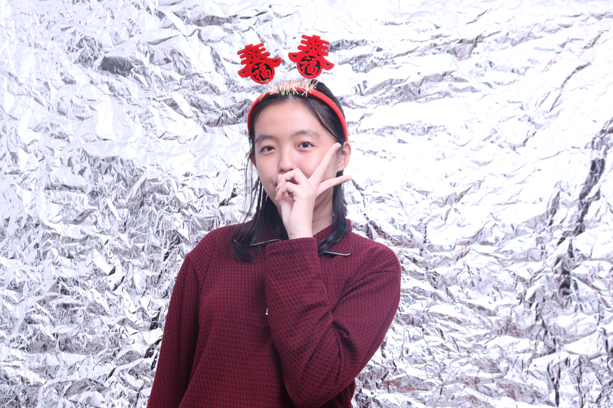

Hii, hari ini w cuma mau bilang, kalau lu tuh berarti bangett buat w heheee. Stiap detik bareng lu rasanya
tidak pernah cukup :), dan walaupun kita ga ketemu langsung tapi mau gimanapun kek pas sama lu tuh bener bener
ga pernah sepiii. w cuma mau bilang happy valentine walaupun kita baru 1 bulan mendekati 2 bulan hehe 😀😀,tapi
2 bulan itu bener bener bagi w seru bet saat call sama lu, chat sama lu dan lain lain dahh pokoknya hehe

dan w mau bilang sorry kalau selama ini w ga terlalu sesuai dengan yang lu harapkan selama ini, karena kalau
w liat , lu tuh tipikal orang yang pengen dipublish, dikabari teruss dan bucin. sedangkan w tipikal orang
yang jarang main media sosial seperti tiktok, ig dan lainnya. w pun kadang bisa ketiduran hehe 😀😀.
w juga ga terlalu terbiasa pake panggilan "by".

Btw lu kan pernah tanya tuh w suka lu sama apaa, nah w jawab disini ajalah yaaa. jadi sebenarnya w suka
lu tuh ketika kita masih main gartic bareng bareng di dc, ntah kenapa pas kita DC tuh dari semua orang
yang open mic, lu tuh orangnya bener bener berattitude bangett, pas ada yang ngomong lu langsung mengalah
padahal lu duluan ngomong.pas cerita juga banyak kesamaan .tapi selain itu masih banyak kalii hal hal yang bikin w suka.

sekali lagi Happy valentine,byy💞. makasih yaa dah sabar hadapi w yang dikit dikit uk, yang banyak menolak
beberapa story yang lu pengen banget buatt. w g buat story gitu bukan karna ga sayang , tapi w emang jarang
sekali main media sosiall. trus jangan gampang dikompori yaa hehe , karna w ga mungkinlah begituu. temen w juga
pasti itu cuma pengen kompor komporin luu. Mungkin ini aja sih yang w bisa kasih untuk valentine kali ini, maaf ya
kalau tidak sesuai ekspektasi luu, karna w bukan orang yang sangat bucin😀.
Happy Valentineee